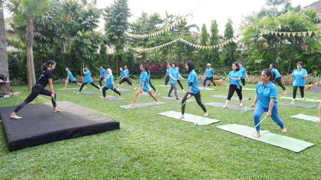
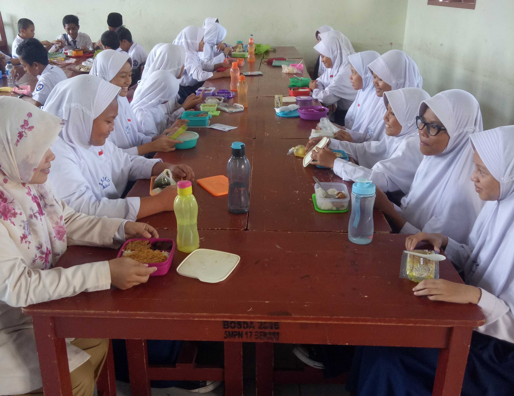
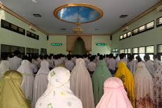
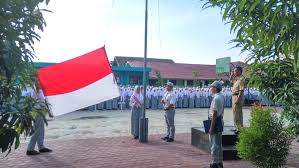

KEGIATAN |
Beranda |
Sarana |
Progam |
Lokasi |
Senam Senam adalah suatu bentuk pembelajaran fisik berupa latihan dan gerakan tubuh yang disusun secara sistematis dan terencana untuk meningkatkan kesegaran jasmani, mengembangkan keterampilan, dan menanamkan nilai mental spiritual. |
 |
 |
Makan Siang Bersama Makan siang bersama di sekolah adalah tradisi atau kegiatan di mana siswa dan guru makan bersama dalam satu waktu di lingkungan sekolah, yang berfungsi untuk mempererat hubungan, menanamkan nilai-nilai kebersamaan, kedisiplinan, rasa syukur, serta menjaga asupan gizi yang cukup untuk mendukung aktivitas belajar. |
Sholat Dhuha Shalat Dhuha di sekolah adalah program rutin ibadah sunnah yang dilaksanakan siswa dan guru secara berjamaah di lingkungan sekolah pada waktu dhuha, bertujuan untuk membentuk karakter positif, menumbuhkan kedisiplinan, rasa syukur, dan mempererat spiritualitas siswa serta guru. |
 |
|  | Upacara Upacara bendera adalah kegiatan pengibaran bendera negara yang dilakukan di Indonesia, baik secara rutin (terutama Senin) maupun pada hari-hari besar nasional, yang meliputi pembacaan teks-teks penting dan amanat pembina upacara, dan memiliki makna mendalam seperti patriotisme, persatuan bangsa, dan pembentukan karakter. |